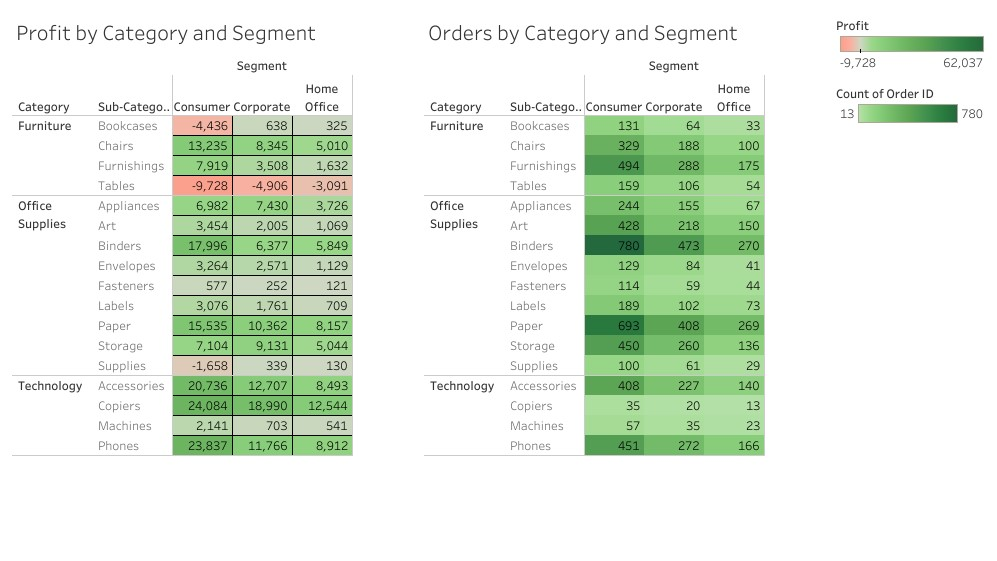
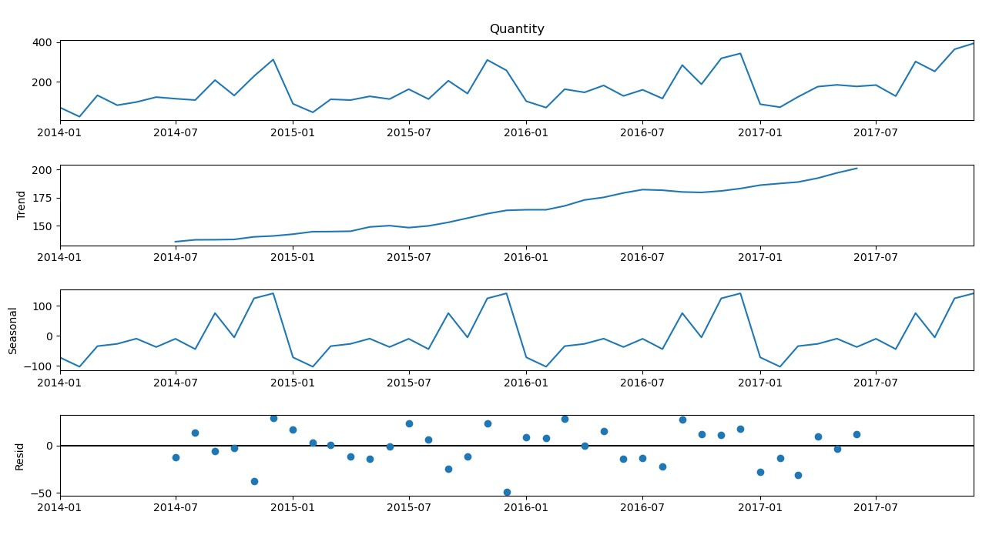

I started the exploratory data analysis using Tabeau. Creating several useful dashboards and worksheets to gain a better understanding of the data set. The Tableau dashboards and worksheets
provided valuable insight into the data set, especially as to which business segment, category, and sub category is the most profitable. Tableau's vizualition ability helped me to identify
what states and product types that have returned negative profits over the course of the recorded data.
Georaphical analysis showed that there was not always a 1:1 relationship. For example California was the state that had the most units sold and was the most profitable state,
however, Texas was also a top five state for units sold but was the least profitable state for the store. This counterintuitive relationship holds true for other states as well.
Some valuable insight gained from this shows that while some states buy a lot of products the products that are sold are either priced to low or are unprofitable to keep in stock and further market research
is needed to reasses the presence of the store in these states.
Segment, Category, and Consumer Group Data

Above is another Tableau dashboard that shows a breakdown of the profit and units sold by customer segment, category and subcategory. The customer segment that is the most profit generating is
consumer as well as the biggest buyer of units sold. Technology was the most profitable product category for all three customer segments at around $145,000 in profits. Office Supplies generated around $120,000, and the smallest was Furniture which brought in $18,000.
With this information a recommendation for this store could be to focus on their more profitable categories and scale down their furniture holdings. In addition to scaling down furniture sales,
tables have been returned negative profits over the course of four years, therefore, it warrants a closer look into continuing keeping tables in the store's holdings.
Conclusion
Using Tableau to preform exploratory data analysis I found that there is not a 1:1 relationship between states with high order counts and states that generated the highest profits.
In addition taking a closer look into the customer type, prodcut categories and subcategories gave insight into which segments should be focused on and which should be scaled back.
Consumers made up the biggest group of orders as well as the most profit generating customer group. Technology is the most profitable business category followed closely by Office Supplies.
The most profitable subcategory is Copiers across all three customer groups. Furniture being the smallest profit generating category also has products that have costed the store to sell. These
include Tables for all three customer groups and Bookcases for Consumers. The only other negative profit subcategory is Supplies in the Office Supplies business category, however,
this is only true for Consumers.
Forecasting

Above is an output graph of the historical units sold and the forecasted units sold for the next year for each category of the store. I chose to conduct a SARIMA or
Seasonal Autoregressive Integrated Moving Average model to forecast the future units sold because there is a strong seasonality component to the store's sales that would not be captured with the standard ARIMA forecast.
I used Python to manipulate the data set in order to make the calculations and forecasting easier. I started by creating three seperate Pandas DataFrames to store each
of the different categories. I used the library statsmodels.api for the SARIMA model as it has built in functions and formulas that aided in the creating of the timeseries analysis.
in understanding the timeseries data firstly I defined a function to check the seasonality of the data and had it output figure #whatever (# the figures later)
as shown there is a strong seasonal pattern shown throughout the year with orders peaking in the fourth quarter and dropping off sharply in the first.
Figure # whatever